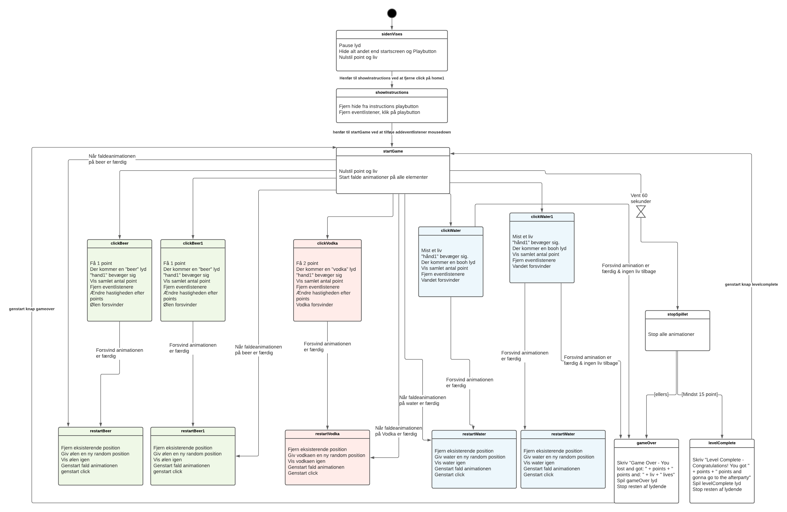

(Du kommer ind på opgaven vet at trykke på billedet ovenover)
Opgave: 04.05.01 Individuelt spil
Værktøjer: HTML / CSS / Javascript / Adobe Illustrator
Projekt type: Kodning / Design / Grids
I Tema 4 blev vi introduceret til javascript, et kodesprog som bruges til mere avancerede og dynamiske websider samt interaktive elementer.
I denne opgave skulle vi individuelt lave vores helt eget spil. Til at starte med har jeg lavet noget sketches i hånden, så jeg kunne danne overblik, efter det har jeg lavet rentegninger i Adobe Illustrator med pen og shapes tool og eksporteret det som SVG-filtype da det kan skalere uden at miste kvalitet. Efter at have implementeret elementerne i HTML har jeg tilføjet animationer vha. “Class” taget i HTML og “@keyframes” i CSS. Dernæst lavede jeg et statemachine diagram, så jeg har et klart overblik over alle handlinger i spillet, diagrammet gør det også nemmere at kode, da man har et konkret struktur. For at få spillet til at virke brugte jeg javascript funktioner og metoder som (classList.add/addEventListener). Derefter har jeg fundet rettighedsfri musik fra en lydbibliotek til baggrundsmusikken og optaget selv lydeffekter til de forskellige interaktioner og animation. Jeg har fjernet baggrundsstøj på Adobe Audition, og implementeret lyden i HTML vha. “audio” tagget. Det javascript som vi har lært under dette tema kan endvidere bruges til at lave burgermenu, snap-scrolls mv.
Statemachine Diagram
